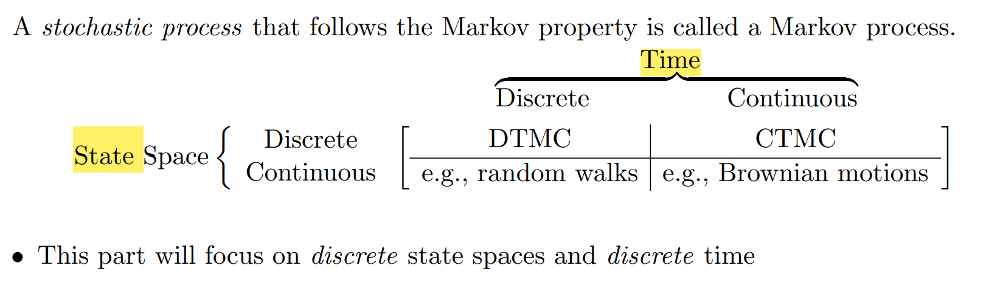

我想分享运筹学基础的概念和在计算机中的应用。
我认为，运筹学主要描述建模的过程，由各种的假设得到各种分布、过程，进而进行决策。
-
唯一具备无记忆性的连续随机变量分布是指数分布。
P{X>s+t}=P{X>s}P{X>t}⇔F(x)=P{X≤x}={1−e−λx,0,if x≥0,if x<0.
我们只验证无记忆性推导到指数分布：设g(s)=P{X>s}，则:
P{X>s+t}=P{X>s}P{X>t}⇔g(s+t)=g(s)g(t)⇒g(2/n)=g(1/n)g(1/n)⇒g(m/n)=g(1/n)m,g(1)=g(1/n)n⇒g(m/n)=g(1/n)m=(g(1)1/n)m=g(1)m/n⇒g(x)=g(1)x=e−λx,λ=−lng(1)
-
唯一具备无记忆性的离散随机变量分布是几何分布。
P{X>s+t}=P{X≥s}P{X>t}⇔P(x=n)=(1−p)n−1p,n∈N+
同样我们验证从左边式子推导到右边：
P{X>s+t}=P{X≥s}P{X>t}⇒P{X>k+t}=P{X≥k}P{X>t}且P{X>s+k}=P{X≥s}P{X>k}⇒P{X≥k}t=1∑∞P{X>t}=t=1∑∞P{X>k+t}=s=1∑∞P{X>k+s}=P{X>k}s=1∑∞P{X≥s}⇔P{X≥k}t=1∑∞P{X>t}=P{X>k}s=1∑∞P{X≥s}⇔P{X≥k}t=2∑∞P{X≥t}=P{X≥k+1}t=1∑∞P{X≥t}
我们取k=1，设 p=P{x=1}，设 α=∑t=2∞P{X≥t}，则1∗α=(1−p)(1+α)，得到α=(1−p)/p，代入原式得到P{X≥k}α=P{X≥k+1}(1+α)，即(1−p)P{X≥k}=P{X≥k+1}。于是P{X≥k}=(1−p)k−1，因此P{X=k}=P{X≥k}−P{X≥k+1}=p(1−p)k−1
-
泊松（Poisson）分布
P{X=i}=e−λi!λi,i=0,1,…。
性质：二项分布（n次独立重复试验，每次实验成功概率为p，则实验成功k次的概率为Cnkpk(1−p)n−k）在n很大，p很小的时候近似于泊松分布。
我们平常接触得比较多的是随机变量的分布，但要是考虑时间流动，随机变量的分布可能会变。我们怎么建模这种现象？随机过程！
随机过程X={X(t),t∈T}是一组随机变量。也就是说，对于任意的t∈T，X(t)是一个随机变量。
随机过程特殊性质：
- 独立增量（independent increments）：对于所有的t0<t1<t2<⋯<tn，随机变量X(t1)−X(t0),X(t2)−X(t1),…,X(tn)−X(tn−1)相互独立。
- 稳定增量（stationary increments）：∀s,X(s+t)−X(s)都有相同的分布。
自然语言处理中“语言是稳态的可遍历性的随机过程”中“稳态”就是上面的稳定增量，指的是“从今天《人民日报》和明天《人民日报》分别采样得到的汉语统计特征是一样的”。
记N(t)为[0,t]内发生的事件个数，则{N(t),t≥0}被称作计数过程。
泊松过程（参数为λ）是满足如下性质的计数过程：
- N(0)=0
- 随机过程是独立增量的
- 任意一个长度为t的时间段内事件数量服从λt的泊松分布。即∀t≥0,∀s≥0,P{N(s+t)−N(s)=n}=e−λtn!(λt)n
显然泊松过程也具备稳定增量的性质。
记Xn为第n−1个事件和第n个事件之间的时间长度。泊松过程（参数为λ）等价于Xn(∀n=1,2,…) 服从参数为λ的指数分布。
证明：
P{X1≥t}=P{N(t)=0}=e−λtP{X2>t∣X1=s}=P{0 events in (s,s+t]∣X1=s}=independentP{0 events in (s,s+t]}=stationaryP{0 events in (0,t]}=e−λt
- Markov Property:给定当前状态，未来状态和过去状态无关。
P{Future∣Present,Past}=P{Future∣Present}
- 马尔科夫过程分类：

- homogeneous Discrete-Time Markov Chain：P{Xn+1=j∣Xn=i}=pij，时间、状态离散，且转移概率和时间无关。
- Chapman-Kolmogorov 等式：记从 i 状态花 n 步转移到 j 状态的概率为pijn，则pijn+m=∑k=0∞piknpkjm,∀n,m≥0,∀i,j。矩阵形式：P(n+m)=P(n)P(m),Pij(n)=pijn
- state 的分类：recurrent（常返）和transient（瞬态）。j是recurrent的当且仅当∑n=1∞pjjn=∞。
- 例子1：PageRank：若ij间有链接，则pij=1/di，其中di表示i的度数。Page i 的分数记为πi的话，则(π1,π2,…)=π=πP。
- 例子2：HMM（隐马尔科夫模型）：每个输出序列对应着一个隐藏状态序列，输出是关于隐藏状态的随机变量，隐藏状态是个DTMC。
- 例子3：CRF（条件随机场）：NLP和图像处理中的序列标注和结构划分问题。给定观察序列X，输出标识序列Y，通过计算P(Y∣X)求解最优标注序列。
若对于无向图G=(V,E)，V中每个节点对应于Yv的随机变量，且满足p(Yv∣X,Yw,w=v)=p(Yv∣X,Yw,(v,w)∈E，∀v,w∈V，则(X,Y)为条件随机场。
比如NLP中词性标注任务：X就是句子，Y是我们要给每个字标注的词性，词性之间有马尔科夫性（当前字的词性仅仅和前面1个字的词性有关）
比如图像处理中的分割任务：X就是所有像素，Y就是我们要给每个像素打的标签，某个像素点的标签仅仅和相邻4个像素点的标签有关。
- homogeneous Continuous-Time Markov Chain：Pij(t)=P{X(s+t)=j∣X(s)=i},∀s。CTMC=DTMC+在状态上的停留时间服从指数分布。
- 生灭过程（Birth and Death process）：某个时刻系统内有n个人，那么下一个人到达系统的时间间隔服从λn的指数分布，系统内下一个离开的人的时间间隔服从μn的指数分布。
- 网络流量测量的几个重大发现：数据对话请求（session）的到达服从泊松分布，或者说，用户访问服从泊松分布。
- 数据包（package）的到达不服从泊松分布（数据包到达具有突发性）
- 为什么要研究泊松分布？还记得我们先前说二项分布近似于泊松分布在什么样的场景下吗？人数量很多（n），每个人在此时选择此项服务的概率（p）很小。
因此，现实中很多场景会出现泊松分布。
泊松过程建模的是时间段内发生的事件数量，等价于事件间隔时间服从指数分布。
因此最经典的排队论模型：M/M/1，M（下一个用户到达时间服从指数分布）/M（服务器服务当前一个人的时间服从指数分布）/1（一个服务器）
MDP：在DTMC的基础上，引入动作（action）和奖励（reward）的概念，动作（action）对应着我们可以影响状态和状态之间的转移概率，每个状态对应着一个值（v，代表这个状态下获得的期望回报），奖励在采取动作后获得。
Inventory theory：每天早上进货，当天的需求未知，进货进多了卖不，进货进少了利润不高。
- newsvendor model（报童模型）：单份报纸卖 p元，单份报纸成本为c元，当天需求D的累积分布函数Φ()未知，求最优进货数量y？
期望收益为:ED[pmin(D,y)−cy]，求导为0得到Φ(y∗)=pp−c。
证明：
=====ED[pmin(D,y)−cy]ED[pD+pmin(0,y−D)−cD+c(D−y)]ED[pD−cD]+ED[pmin(0,y−D)]+cED[(D−y)](p−c)ED[D]−pED[max(0,D−y)]+cED[(D−y)+−(D−y)−](p−c)ED[D]−pED[(D−y)+]+cED[(D−y)+−(D−y)−](p−c)ED[D]−(p−c)ED[(D−y)+]−cED[(D−y)−]
max上式等价于最小化L=(p−c)ED[(D−y)+]+cED[(D−y)−]=(p−c)∫y∞(z−y)ϕ(z)d(z)+c∫0y(y−z)ϕ(z)dz。而∂y∂L=(p−c)[−1(1−Φ(y))]+cΦ(y)=c−p+pΦ(y)=0
这里用了个公式：dtd∫h(t)g(t)F(x,t)dx=F(h,t)tdh(t)−F(g,t)tdg(t)+∫h(t)g(t)dtdF(x,t)dx。
因此dyd∫y∞(z−y)ϕ(z)d(z)=0−0∗1+∫y∞−ϕ(z)d(z)=−(1−Φ(y))。
- 博弈论
- 线性规划
- 非线性规划
- 组合优化
- 复杂性理论